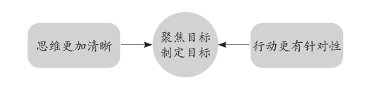
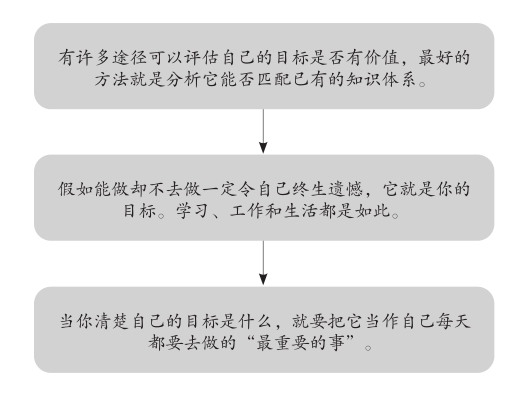

第四章
聚焦目标
我曾经对学生这样阐述“目标”这个词：“目标不是一个符号，也不是一个摆在那里的台阶，只要走过去、爬上去就好了。目标其实是一个动态变化的信标，它是随着人的思想、年龄的增长而变化的。今天的目标，到了明天未必还是你的目标。今天你的目标是把这本书学好，明天还是吗？也许就变成了另一本书。”
之所以告诉学生人的目标是动态的，是希望他们不要妄想长期对同一个目标保持专注。这不现实，尽管总有少数人能凭借坚韧的意志力做到这一点。但大部分人是“普通人”，每天的原始资本都是24小时，一种兴趣往往持续不了一两年，最务实的做法是——在这一两年的黄金时间内聚焦在一个正确的目标上，尽可能取得不凡的成果。
理查德·费曼也不鼓励以天才为榜样，因为学习不能倡导以过度地消磨意志力为荣，学习应该是轻松的，轻松到几个易于理解的步骤便能收获非常大的成效。事实上，许多精英人士就是这么做的，他们不是天才，却是学习的高手，在有限的时间内学到了比其他人更多的知识并应用到了实际的生活和工作中，得到了远远高过大多数人的收益。
这个答案就是：
他们善于抓住学习的黄金时间，将全部的精力聚焦于选定的目标之上，心无旁骛地把这门知识/技能学通、学精和化为己用。
这意味着当学习一门知识的最佳窗口打开时，你要摆脱和放弃那些“可以做”但并非“必须做”的事情，将有限的时间集中到当下这件“应该做”的事情上，也就是掌握这门知识。事情有轻重缓急，最重要的事情就是我们已经制定的这个明确的目标，其他一切都不重要。明白了这一点，你就能在目标和行动之间建立紧密的联系。接下来，你是否成功便取决于目标是否正确，注意力是否做到了足够集中。

这么做对学习有两个明显的好处：
第一，让你的思维更加清晰。
你可以对这个目标看到更多的可能性，对自己要学习的东西有更深的理解，并形成具体的思路。
第二，让你的行动更有针对性。
对目标的专注力越强，你的行动就越有针对性，不论学习的是一些概念还是工作的技能，效率都会大大增强。
比如，每当我非常想读一本书时，就会立刻安排时间，绝不“等什么时候有空闲了再说”。因为我知道，也许再过一两个星期我对这本书的兴趣可能就不大了，那时强制自己拿起来阅读的收获一定远不如现在。所以我读书有一个习惯，只要感觉来了，拿到手里就不会放下。我会以很快的速度通读一遍，寻找我感兴趣的内容——锁定那些自己有兴趣或需要了解的部分，集中精力去阅读它们。假如时间实在不够，我也会把这些知识标注下来，制订一个阅读计划，才把书放到一边。等定好的时间一到，再以准备充分的状态迎接这场“战斗”，誓要拿下这块“阵地”，非把它们吃透了不可。
在现实的生活中，人们普遍想得很多，计划很多，对学习、生活和工作划分得过于细致，胃口大，却又吃不下。结果是，投入大量的时间东忙西忙，既无效果，对健康也不利。学习难道不是如此吗？实际上，任何事成功的关键都不在于你想做好几件事，而在于你能否做好几件事。
如何找到正确的方向？
我有位朋友的孩子在假期想补习一门历史知识，中国先秦史，明清史，隋唐史，古罗马史，选项很多，他不知道选什么。一部分原因是，这次学习完全由他自己主导，他的父亲绝不干预。让他自主树立一个学习方向，他反而有些束手束脚。
不久前参加一次在线学习的研讨会时，我听到不少与会者在讨论这种现象。老师布置的指向明确的任务，学生一般完成得很不错，按部就班地执行一个既定的学习计划。但对于老师给予的自主学习一门其他知识的建议，他们中的一些人往往感到茫然。学习需要一个正确的方向，问题是，当由你自己选择这个方向时，你怎样判断自己适合学习“隋唐史”还是“古罗马史”？
第一，对自己提出的一些关键问题。
这个世界所有的答案都源于问题，任何一个答案的质量都取决于问题的质量。也就是说我们要学会提问，不仅对别人提问，也要对自己提出高质量的问题，然后做出解答。好比一个对话游戏，一方是“外我”，另一方是“内我”，在对话中让他们达成共识。你的问题问错了，答案再好也无用；假如你对自己提出的问题恰逢其时，正中“内我”的下怀，契合自己真实的需求，答案必将产生积极的化学效应，甚至改变你的一生。
正如我向学生建议的那样，要不断地对自己提出问题，特别是一些“关键问题”。在学习层面，最关键的一个问题就是：“对我而言最重要的那件事是什么？”在这个假期，学习哪一门历史对我最重要/最有意义/我最喜欢？有时候我们用直觉就能回答类似的问题，有时候则需要经过严谨的论证和思考。
在设定目标时，你可以沿着两条轨道提出问题：
未来的方向——
“未来我在历史方面的兴趣，是中国史还是外国史？”
“我的朋友中精通中国史的人，他们是哪个方向？”
“除了隋唐史，我没有其他方向吗？”
“研究隋唐史，能在其他领域帮助到我吗，比如开设收费专栏？”
当下的焦点——
“为了研究隋唐史，我要解决的主要问题是什么？”
“我需要设置一个分阶段目标吗？”
“在历史方面，我有哪些知识的不足？”
“历史记载有真有假，我该怎么收集真实信息？”
未来的方向帮助你树立一个宏观的目标，当下的焦点则能指引你制订正确的行动和学习计划。只用八个问题，你就能在纷杂的选项中找到对的那一个。这也是费曼在他的教学过程中提倡的一种思考方式。思考应该是二维的，我们不但要思考自己的终极目标，还要思考为了实现这个目标当下需要做什么，怎么做。因为知识也是二维的，它不是一维的符号，而是一条二维的线，不同的阶段，你要做的事情总有区别。
第二，把“最重要的那件事”变成自己的方向。
当方向确立以后，学习正式迈出第一步。
每天早上你一定要问一问自己：“今天，对我最重要的那件事是什么？”今天是了解一个大纲，还是去图书馆查冷僻的资料？今天是整理事件年表，还是串联人物时间？这是学习历史的必经步骤。一旦敲定了这个问题的答案，学习的效率就会大大提高。
今天最重要的事情就是你在学习中的方向，首先你要相信自己可以做好当下的这一步，因为每走好一步，人生就能因此而改变。如果没有这个信心，你也不可能采取行动。甚至你连图书馆在哪儿都不会查证。其次是一些细节的建议，你可以利用身边的工具：手机屏保、日历、笔记本、墙贴等，把每一天的目标写在显眼之处。这既是提醒，也是鼓励，用可视化的方式不断地督促自己聚焦于目标，将这件重要的事情做好。
如何找到真正的兴趣？
兴趣和目标其实略有不同。在费曼看来，兴趣是一切高质量学习的驱动力。著名心理学家和教育学家本杰明·布卢姆（B.S.BLOOM）也表达过类似的观点，他说：“学习的最大动力，是对学习材料的兴趣。”
联系兴趣和目标的是一座“人为桥梁”，它并非天然存在，我们要注意将自己原有的知识体系与现在或一贯的爱好嫁接起来，以便从中找到真正的兴趣。有的人一听到“历史”这个词就备感头痛，在学校对于历史课程向来冷淡置之，仅限于应付考试。他可能是历史考试的高手，“记忆大师”，但让他自主通读一本历史书时，他马上觉得世界末日到了。假如你看到隋唐史的书籍时也有这种感觉，显然这就不是你的兴趣，学习历史对你可能没有益处，这是应该放弃的目标。
相反，如果你从小就喜欢听历史故事，比如《三国演义》《隋唐演义》耳熟能详，别人不知道的历史人物你都能信手拈来，如数家珍，老师和父母又支持你多学一些历史知识，并为你提供有关的书籍。你具备这个条件，也具有强烈的动机，学历史让你感到愉悦，而且你有向别人讲解历史的冲动和语言天赋。那么，这不但是你的兴趣，还是你的特长。物理、天文、数学、科技等知识也与此类似。学习是有血有肉的过程，它植根于我们的心灵反应。只有真心地喜欢学习一门知识，你才能把费曼学习法后面的步骤进行下去，并完成得很好。
为了定位真正的兴趣，不妨多给自己一些宽松自由的思考空间，深入分析那些自己喜欢的领域，查阅相关的资料，然后进行初步的尝试，从中找到自己学习的对象。
